|
Dynamic Routing Guide
|
The DRO's routing algorithm is said to be "interest-based". That is, subscribers express interest in topic names and/or wildcard topic patterns. The DRO network maintains lists of topics and patterns for each TRD, and routes messages accordingly.
The diagram below shows a DRO bridging topic resolution domains TRD1 and TRD2, for topic AAA, in a direct link configuration. Endpoint E1 contains a proxy receiver for topic AAA and endpoint E2 has a proxy source for topic AAA.
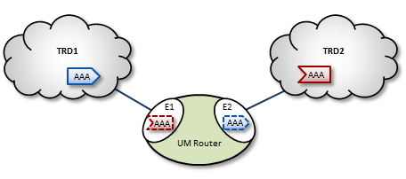
To establish topic resolution in an already-running DRO, the following sequence typically occurs in an example like the above figure.
As mentioned in Basic DRO Operation, the DRO's routing algorithm is "interest-based". The DRO uses UM's Topic Resolution (TR) protocol to discover and maintain the interest tables.
For TCP-based TR, the SRS informs DROs of receiver topics and wildcard receiver patterns.
For UDP-based TR, the application's TR queries are used to inform DROs of its receiver topics and wildcard receiver patterns.
When a DRO starts, its endpoint portals issue a brief series of Topic Resolution Request messages to their respective topic resolution domains. This provokes quiescent receivers (and wildcard receivers) into sending Use Query Responses, indicating interest in various topics. Each portal then records this interest.
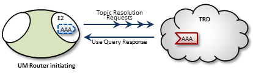
After a DRO has been running, endpoint portals issue periodic Topic Use Queries and Pattern Use Queries (collectively referred to as simply Use Queries). Use Query Responses from UM contexts confirm that the receivers for these topics indeed still exist, thus maintaining these topics on the interest list. Autonomous TQRs also refresh interest and have the effect of suppressing the generation of Use Queries.
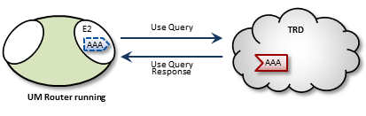
In the case of multi-hop DRO configurations, DROs cannot detect interest for remote contexts via Use Queries or TQRs. They do this instead via Interest Messages. An endpoint portal generates periodic interest messages, which are picked up by adjacent DROs (i.e., the next hop over), at which time interest is refreshed.
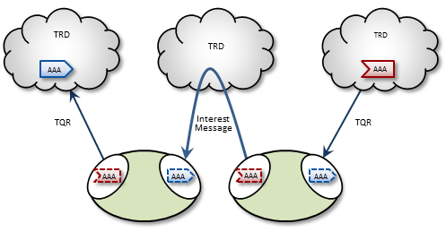
You can adjust intervals, limits, and durations for these topic resolution and interest mechanisms via DRO configuration options (see DRO Configuration Reference).
To maintain a reliable connection, peer portals exchange DRO Keepalive signals. Keepalive intervals and connection timeouts are configurable on a per-portal basis. You can also set the DRO to send keepalives only when traffic is idle, which is the default condition. When both traffic and keepalives go silent at a portal ingress, the portal considers the connection lost and disconnects the TCP link. After the disconnect, the portal tries to reconnect. See <gateway-keepalive>.
DRO proxy sources on endpoint portals, when deleted, send out a series of final advertisements. A final advertisement tells any receivers, including proxy receivers on other DROs, that the particular source has gone away. This triggers EOS and clean-up activities on the receiver relative to that specific source, which causes the receiver to begin querying according to its topic resolution configuration for the sustaining phase of querying.
In short, final advertisements announce earlier detection of a source that has gone away, instead of transport timeout. This causes a faster transition to an alternative proxy source on a different DRO if there is a change in the routing path.
The domain-id is used by Interest Messages and other internal and DRO-to-DRO traffic to ensure forwarding of all messages (payload and topic resolution) to the correct recipients. This also has the effect of not creating proxy sources/receivers where they are not needed. Thus, DROs create proxy sources and receivers based solely on receiver interest.
If more than one source sends on a given topic, the receiving portal's single proxy receiver for that topic receives all messages sent on that topic. The sending portal, however creates a proxy source for every source sending on the topic. The DRO maintains a table of proxy sources, each keyed by an Originating Transport ID (OTID), enabling the proxy receiver to forward each message to the correct proxy source. An OTID uniquely identifies a source's transport session, and is included in topic advertisements.
When an application creates a source, it is configured to use one of the UM transport types. When a DRO is deployed, the proxy sources are also configured to use one of the UM transport types. Although users often use the same transport type for sources and proxy sources, this is not necessary. When different transport types are configured for source and proxy source, the DRO is performing a protocol conversion.
When this is done, it is very important to configure the transports to use the same maximum datagram size. If you don't, the DRO can drop messages which cannot be recovered through normal means. For example, a source in Topic Resolution Domain 1 might be configured for TCP, which has a default maximum datagram size of 65536. If a DRO's remote portal is configured to create LBT-RU proxy sources, that has a default maximum datagram size of 8192. If the source sends a user message of 10K, the TCP source will send it as a single fragment. The DRO will receive it and will attempt to forward it on an LBT-RU proxy source, but the 10K fragment is too large for LBT-RU's maximum datagram size, so the message will be dropped.
See Message Fragmentation and Reassembly.
The solution is to override the default maximum datagram sizes to be the same. Informatica generally does not recommend configuring UDP-based transports for datagram sizes above 8K, so it is advisable to set the maximum datagram sizes of all transport types to 8192, like this:
context transport_tcp_datagram_max_size 8192 context transport_lbtrm_datagram_max_size 8192 context transport_lbtru_datagram_max_size 8192 context transport_lbtipc_datagram_max_size 8192 source transport_lbtsmx_datagram_max_size 8192
Note that users of a kernel bypass network driver (e.g. Solarflare's Onload) frequently want to avoid all IP fragmentation, and therefore want to set their datagram max sizes to an MTU. See Datagram Max Size and Network MTU and Dynamic Fragmentation Reduction.
Configuration options: transport_tcp_datagram_max_size (context), transport_lbtrm_datagram_max_size (context), transport_lbtru_datagram_max_size (context), transport_lbtipc_datagram_max_size (context), and transport_lbtsmx_datagram_max_size (source).
Final note: the resolver_datagram_max_size (context) option also needs to be made the same in all instances of UM, including DROs.
UM can resolve topics across a span of multiple DROs. Consider a simple example DRO deployment, as shown in the following figure.
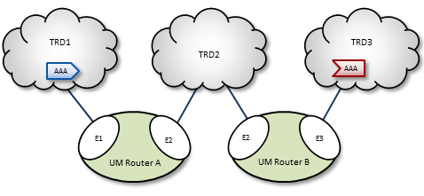
In this diagram, DRO A has two endpoint portals connected to topic resolution domains TRD1 and TRD2. DRO B also has two endpoint portals, which bridge TRD2 and TRD3. Endpoint portal names reflect the topic resolution domain to which they connect. For example, DRO A endpoint E2 interfaces TRD2.
TRD1 has a source for topic AAA, and TRD3, an AAA receiver. The following sequence of events enables the forwarding of topic messages from source AAA to receiver AAA.
The DRO supports topic resolution for wildcard receivers in a manner very similar to non-wildcard receivers. Wildcard receivers in a TRD issuing a WC-TQR cause corresponding proxy wildcard receivers to be created in portals, as shown in the following figure. The DRO creates a single proxy source for pattern match.
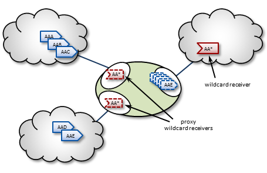
Forwarding a message through a DRO incurs a cost in terms of latency, network bandwidth, and CPU utilization on the DRO machine (which may in turn affect the latency of other forwarded messages). Transiting multiple DROs adds even more cumulative latency to a message. Other DRO-related factors such as portal buffering, network bandwidth, switches, etc., can also add latency.
Factors other than latency contribute to the cost of forwarding a message. Consider a message that can be sent from one domain to its destination domain over one of two paths. A three-hop path over 1Gbps links may be faster than a single-hop path over a 100Mbps link. Further, it may be the case that the 100Mbps link is more expensive or less reliable.
You assign forwarding cost values on a per-portal basis. When summed over a path, these values determine the cost of that entire path. A network of DROs uses forwarding cost as the criterion for determining the best path over which to resolve a topic.
DROs have an awareness of other DROs in their network and how they are linked. Thus, they each maintain a topology map, which is periodically confirmed and updated. This map also includes forwarding cost information.
Using this information, the DROs can cooperate during topic resolution to determine the best (lowest cost) path over which to resolve a topic or to route control information. They do this by totaling the costs of all portals along each candidate route, then comparing the totals.
For example, the following figure shows two possible paths from TRD1 to TRD2: A-C (total route cost of 11) and B-D (total route cost of 7). In this case, the DROs select path B-D.
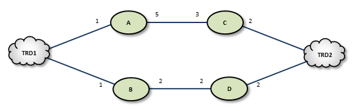
If a DRO or link along path B-D should fail, the DROs detect this and reroute over path A-C. Similarly, if an administrator revises cost values along path B-D to exceed a total of 12, the DROs reroute to A-C.
If the DROs find more than one path with the same lowest total cost value, i.e., a "tie", they select the path based on a node-ID selection algorithm. Since administrators do not have access to node IDs, this will appear to be a pseudo-random selection.
In normal usage, you cannot configure parallel paths (such as for load balancing or Hot failover), as the DROs always select the lowest-cost path and only the lowest-cost path for all data between two points.
An exception to this rule is DRO Hotlinks (see next section).
The DRO "hotlink" feature is intended for large UM deployments where multiple datacenters are interconnected by two independent global networks. The function of the DRO hotlinks feature is to implement a form of Hot Failover (HF) whereby two copies of each message are sent in parallel over the two global networks from a publishing datacenter to subscribing datacenters. The subscribing process will normally receive both copies of each message, but UM will deliver the first one it receives and discard the second.
The purpose for this feature is to provide high availability in the face of failure of a global network. It is unlikely that both global networks will fail at the same time, so if one does fail, the messages flowing over the other network will continue to provide connectivity without the need to perform an explicit "fail over" operation (which can introduce temporary packet loss and latency).
Hotlinks operate on a Topic Resolution Domain ("TRD") basis. Here is a typical hotlink topology:
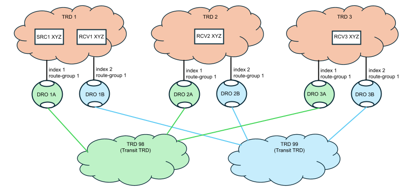
The primary job of the DRO is to connect TRDs together. In the above diagram, messages for topic "XYZ" published by SRC1 are received by RCV1, RCV2, and RCV3.
Let's consider RCV3. There are two possible paths to get from SRC to RCV3: transiting through TRD 98 and transiting through TRD 99. If this were a normal (not hotlinked) DRO deployment, UM would determine which path has the lowest cost and would route all messages through that path, not using the other path at all. With the hotlinks feature enabled, both DRO 1A and DRO 1B will create proxy receivers for topic XYZ and both will forward every message across the corresponding transit TRD to the destination. Once in the destination TRD 3, both copies of each message are received by the subscribing application RCV3, and UM will deliver the first one that arrives and discard the second.
To enable the hotlinks feature, you must:
A DRO is configured to operate in a hotlinked fashion by setting the hotlink index. When assigning hotlink index values, each DRO operating in hotlinked mode must have different index value for endpoint portals within a given TRD. In the above diagram, DROs 1A and 1B must have different index values. But they do not have to be unique across the entire network. So the index values in one TRD can overlap with indices used in other TRDs. Note that there is no need to use the same index value for the corresponding DROs in each hotlinked TRD (i.e. DROs 1A, 2A, and 3A do not need to use the same indices).
The route group values are intended to show which DRO portals should operate in hotlink mode with respect to each other. DROs 1A and 1B use the same route group, and therefore will operate in hot-hot mode. This allows the mixing of multiple hotlink groups and non-hotlinked DROs in the same TRD. See Mixing Regular and Hotlinked DROs. The route group is only meaningful for DRO portals configured with a hotlink index.
Normally there is no expectation of mapping between TRDs and the physical entities (networks, datacenters, hosts). The distribution of programs to TRDs is logical, not physical. However, the hotlinks feature deviates from that pattern with the expectation that TRDs map onto specific physical entities. Here is the previous logical TRD network shown in its physical embodiment:
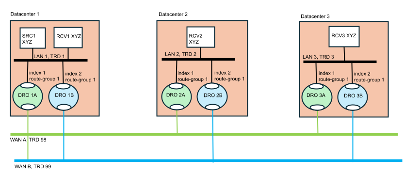
The above diagram is a "dual hub with spokes" topology where the two WAN-based TRDs are the hubs and the data centers are the spokes. It is assumed that each data center's LAN uses LBT-RM (multicast) transports, although this is not strictly necessary.
The publisher for topic "XYZ" (SRC1) is in datacenter 1. It sends a single message via multicast onto LAN 1. The subscriber "RCV1" will receive a copy of the message, as will the two DROs labeled "1A" and "1B". Those DROs will forward the message onto "WAN A" and "WAN B" respectively. Now you have two copies of the message. Let's follow the message into datacenter 2 via DROs "2A" and "2B". Each DRO receives its respective copy of each message and forwards it onto LAN 2. Note there are still two copies of the message on LAN 2. Finally receiver "RCV2" gets both copies of the message, and UM's "hot failover" logic delivers the first one to the application and discards the second one.
Note that the WAN TRDs can also use multicast, or can be configured for unicast-only operation. In fact, even the LANs can be used in unicast mode, although that will force the publisher "SRC1" to send the message three times, to RCV1, DRO 1A, and DRO 1B.
The benefit of the hotlinks feature is that if WAN A fails, the receivers for XYZ will not detect any disruption or latency outliers - WAN B will continue carrying the messages. There is no "fail over" sequence. A downside of this design is that the receivers will experience twice the packet load. However, also note that the second copy of each message is discarded inside UM, so no application overhead is consumed.
The hotlinks feature is intended to be used in deployments similar to the above diagram, with DROs interconnecting multiple datacenters. It is not designed to handle redundancy within a datacenter.
Here is the configuration for "DRO 1A" referenced in the previous sections:
<?xml version="1.0" encoding="UTF-8" ?>
<tnw-gateway version="1.0">
<daemon>
<name>dro_1A</name>
<log type="console"/>
<pidfile>dro_1A.pid</pidfile>
<xml-config>um.xml</xml-config>
</daemon>
<portals>
<endpoint>
<name>TRD1</name>
<domain-id>1</domain-id>
<cost>1</cost>
<hotlink-index>1</hotlink-index>
<route-group>1</route-group>
<lbm-attributes>
<option name="context_name" scope="context" value="dro_1A-1"/>
</lbm-attributes>
</endpoint>
<endpoint>
<name>TRD98</name>
<domain-id>98</domain-id>
<cost>1</cost>
<lbm-attributes>
<option name="context_name" scope="context" value="dro_1A-98"/>
</lbm-attributes>
</endpoint>
</portals>
</tnw-gateway>
Some notes:
Most receiver events contain a Source String field. In a network using DROs, that source string can represent the proxy source of an adjacent DRO (see Source Strings in a Routed Network). This proxy source string serves the same function of uniquely identifying the source from the receiver's point of view.
However, when the hotlinks feature is enabled, multiple DRO proxy sources can be associated with the same originating source. Events carrying only the proxy source string cannot be correlated to the same originating source using only the hotlinked DRO proxy sources.
So when a receiver has use_hotlink (receiver) enabled, receiver event delivery is modified to use the originating source's source string as the receiver event's "source" field. Note that this is different from a non-hotlinked receiver which delivers the source string of the adjacent DRO's proxy source.
This change is only apparent for receivers that are in a different TRD than the originating source. For receivers in the same TRD, the "source" field contains the originating source's source string for both hotlink-enabled and non-hotlink-enabled receivers.
An additional enhancement to assist in correlating proxy sources with their corresponding originating source is provided for the Receiver BOS and EOS Events. The proxy source string is provided with those two events.
In C, the BOS/EOS proxy source is provided in lbm_msg_t_stct::proxy_source.
In Java, the BOS/EOS proxy source is provided by com::latencybusters::lbm::LBMMessage::proxySource
It is possible to extend the basic hotlinked hub-and-spoke topology. This example is contrived to show three different less-common use cases:
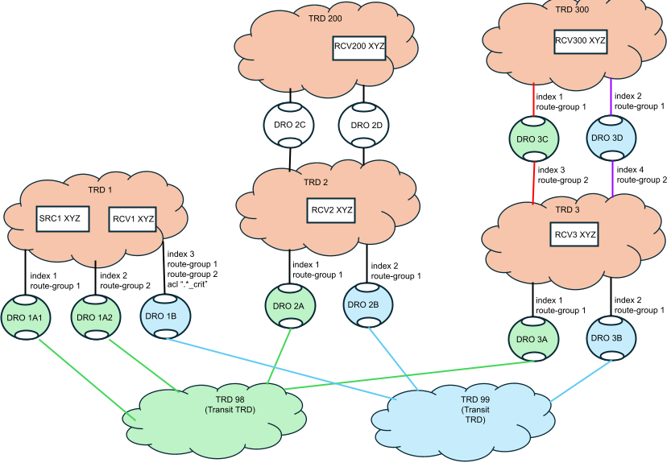
This use case acknowledges the fact that hotlinked receivers can receive double the network traffic. The advantage is high availability in the face of network failure. However, there are use cases where only a subset of "critical" topics require high availability, while normal "non-critical" topics can rely on Parallel Links with failover.
In the above diagram, TRD 1 has publishers of critical topics that end with "_crit" and other, non-critical topics that do not end with "_crit". DRO 1B is configured to only forward topics that end with "_crit" with the configuration:
<endpoint>
...
<acl><inbound>
<ace match="accept"><topic>.*_crit$</topic>
</ace></inbound></acl>
...
</endpoint>
Since topic "XYZ" does not end with "_crit", DRO 1B will not forward those messages.
Now look at DROs 1A1 and 1A2. Note that they are in different route groups. Since they are configured as Parallel Links to TRD 98, they represent a hot/cold failover pair. Only one will be active, which can be controlled with Router Element "<cost>". If the active DRO fails, a failover to the inactive DRO will happen after a timeout. Topic "XYZ" will experience temporary packet loss until the failover completes.
Now note that DRO 1B is in two route groups: 1 and 2. This means that whichever of DROs 1A1 or 1A2 are active, DRO 1B will act as a hotlinked pair to it. For topics that end with "_crit", if DRO 1A1 fails, there will not be packet loss since DRO 1B is replicating the traffic for those topics.
TRD 200 is connected to TRD 2. But the connection is not with two networks, so enabling hotlinks will not significantly increase availability. To conserve bandwidth, DROs 2C and 2D are not configured with hotlink indices or route groups. Thus, 2C and 2D act as a hot/cold failover pair.
TRD 300 is connected to TRD 3 with two independent networks, but not the "main" world-wide networks embodied in transit TRDs 98 and 99. It sets up a separate pair of hotlinked DROs, DRO 3C and 3D, in route group 2 (to separate them from DROs 3A and 3B). Thus, messages published from TRD 3 can be hotlinked down to TRDs 98 and 99, and also hotlinked upward to TRD 300
Finally, note also that DROs 3A and 3B do not use transit TRDs between TRDs 3 and 300. Normally this would be done, but it was omitted to simplify the drawing.
Applications do not need special source code to make use of hotlinks. Contrast this with the Hot Failover (HF) feature that requires the use of special hot failover APIs. Hotlinks use standard source APIs (but see DRO Hotlinks Restrictions), and is enabled through source and receiver configuration, and setting up DROs.
XSP deletion - If using XSPs with hotlinked receivers, no XSPs can be deleted until all receiver objects are deleted. See XSP Restrictions.
No Hot Failover - The hotlinks feature is not compatible with regular Hot Failover (HF). They are intended for different use cases and may not be used in the same UM network.
No Smart Sources - The hotlinks feature is not supported by Smart Sources.
Locate Stores in same TRD as source - Hotlinks supports UM's Persistence feature. However, whereas a non-hotlinked DRO network allows Stores to be placed anywhere in the network, the hotlink feature adds the restriction that the Stores must be in the same TRD as the source. Note that Informatica generally considers this restriction to be the best practice except in certain limited use cases.
No hotlink chains - Informatica only supports a single central redundant pair of networks using the hotlinks feature. UM does not support multiple hotlink hops (Contact UM Support for potential workarounds if this is necessary). For example, this topology is not supported:
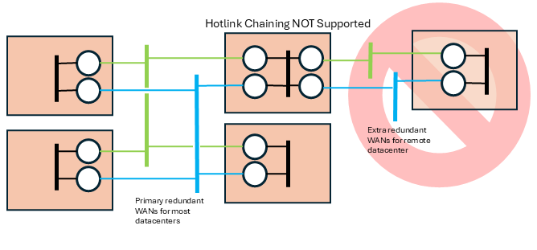
You can configure multiple DROs in a variety of topologies. Following are several examples.
The Direct Link configuration uses a single DRO to directly connect two TRDs. For a configuration example, see Direct Link Configuration.
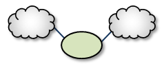
A Single Link configuration connects two TRDs using a DRO on each end of an intermediate link. The intermediate link can be a "peer" link, or a transit TRD. For configuration examples, see Peer Link Configuration and Transit TRD Link Configuration.
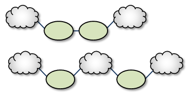
Parallel Links offer multiple complete paths between two TRDs. However, UM will not load-balance messages across both links. Rather, parallel links are used for failover purposes. You can set preference between the links by setting the primary path for the lowest cost and standby paths at higher costs. For a configuration example, see Parallel Links Configuration.
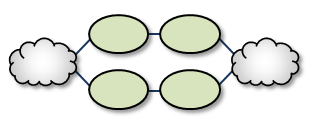
Note that if a DRO or network link fails, the failover action to the parallel DRO can take several seconds, during which time messages are not forwarded (loss). They represent a hot/cold failover pair, with only one of them active. See DRO Hotlinks for zero-loss hot/hot resilience.
Loops let you route packets back to the originating DRO without reusing any paths. Also, if any peer-peer links are interrupted, the looped DROs are able to find an alternate route between any two TRDs.
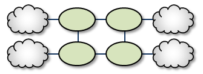
The Loop and Spur has a one or more DROs tangential to the loop and accessible only through a single DRO participating in the loop. For a configuration example, see Loop and Spur Configuration.
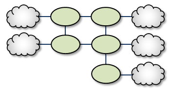
Adding a TRD to the center of a loop enhances its rerouting capabilities.
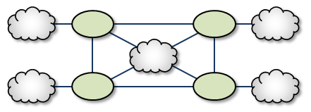
A Star with a centralized TRD does not offer rerouting capabilities but does provide an economical way to join multiple disparate TRDs.
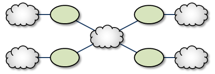
The Star with a centralized DRO is the simplest way to bridge multiple TRDs. For a configuration example, see Star Configuration.
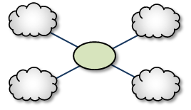
The Mesh topology provides peer portal interconnects between many DROs, approaching an all-connected-to-all configuration. This provides multiple possible paths between any two TRDs in the mesh. Note that this diagram is illustrative of the ways the DROs may be interconnected, and not necessarily a practical or recommended application. For a configuration example, see Mesh Configuration.
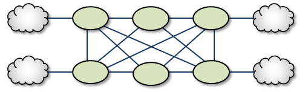
The Palm Tree has a set of series-connected TRDs fanning out to a more richly meshed set of TRDs. This topology tends to pass more concentrated traffic over common links for part of its transit while supporting a loop, star, or mesh near its terminus.
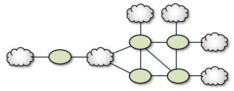
Similar to the Palm Tree, the Dumbbell has a funneled route with a loop, star, or mesh topology on each end.
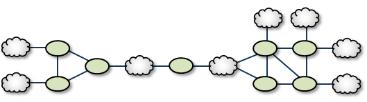
When designing DRO networks, do not use any of the following topology constructs.
Two peer-to-peer connections between the same two DROs:
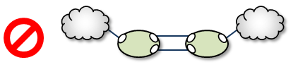
Two endpoint connections from the same DRO to the same TRD:
Assigning two different Domain ID values (from different DROs) to the same TRD:
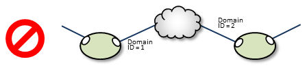
You must install the UM Dynamic Routing Option with its companion Ultra Messaging UMS, UMP, or UMQ product, and versions must match. While most UM features are compatible with the DRO, some are not. Following is a table of features and their compatibilities with the DRO.
| UM Feature | DRO Compatible? | Notes |
|---|---|---|
| Connect and Disconnect Source Events | Yes, but see Source Connect and Disconnect Events | |
| Hot Failover (HF) | Yes | The DRO can pass messages sent by HF publishers to HF receivers, however the DRO itself cannot be configured to originate or terminate HF data streams. |
| Hot Failover Across Multiple Contexts (HFX) | Yes | |
| Late Join | Yes | |
| Message Batching | Yes | |
| Monitoring/Statistics | Yes | |
| Multicast Immediate Messaging (MIM) | Yes | |
| Off-Transport Recovery (OTR) | Yes | |
| Ordered Delivery | Yes | |
| Pre-Defined Messages (PDM) | Yes | |
| Request/Response | Yes | |
| Self Describing Messaging (SDM) | Yes | |
| Smart Sources | Partial | The DRO does not support proxy sources sending data via Smart Sources. The DRO does accept ingress traffic to proxy receivers sent by Smart Sources. |
| Source Side Filtering | Yes | The DRO supports transport source side filtering. You can activate this either at the originating TRD source, or at a downstream proxy source. |
| Source String | Yes, but see Source Strings in a Routed Network | |
| Transport Acceleration | Yes | |
| Transport LBT-IPC | Yes | |
| Transport LBT-RM | Yes | |
| Transport LBT-RU | Yes | |
| Transport LBT-SMX | Partial | The DRO does not support proxy sources sending data via LBT-SMX. Any proxy sources configured for LBT-SMX will be converted to TCP, with a log message warning of the transport change. The DRO does accept LBT-SMX ingress traffic to proxy receivers. |
| Transport TCP | Yes | |
| Transport Services Provider (XSP) | No | |
| JMS, via UMQ broker | No | |
| Spectrum | Yes | The DRO supports UM Spectrum traffic, but you cannot implement Spectrum channels in DRO proxy sources or receivers. |
| UMP Implicit and Explicit Acknowledgments | Yes | |
| UMP Persistent Store | Yes | |
| UMP Persistence Proxy Sources | Yes | |
| UMP Quorum/Consensus Store Failover | Yes | |
| UMP Managing RegIDs with Session IDs | Yes | |
| UMP RPP: Receiver-Paced Persistence (RPP) | Yes | |
| UMQ Brokered Queuing | No | |
| UMQ Ultra Load Balancing (ULB) | No | |
| Ultra Messaging Desktop Services (UMDS) | Not for client connectivity to the UMDS server | |
| Ultra Messaging Manager (UMM) | Yes | Not for DRO management |
| UM SNMP Agent | No | |
| UMCache | No | |
| UM Wildcard Receivers | Yes | |
| Zero Object Delivery (ZOD) | Yes |